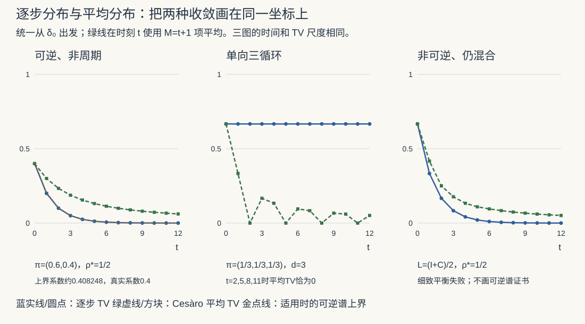

本页目录
随机过程 III · Markov 链（二）：平稳分布与收敛
一个客人在几个房间之间移动。“每个时刻住在各房间的概率不变”“忘记了出发房间”“一条长轨迹的访问比例稳定”是三个不同问题。本页把它们分别写成方程，再解释哪些条件能把这些结论连接起来。
学习层：同一张矩阵，读四种证据
1. 先预测
实验先隐藏数值。请判断：
- 概率向量 \(\pi\) 满足 \(\pi P=\pi\)，证明了不变性，还是所有初态已经收敛？
- 有限链不可约且非周期，是否从每个初态趋向唯一 \(\pi\)？
- 不可约周期链能否有唯一 \(\pi\)，而某些初态的 TV 不趋于零？
- 能否把任意有限链的非平凡特征值模直接代入本页的可逆 TV 上界？
2. 静态后备：六条链把逻辑方向分开
JavaScript 失效时的读法：统一使用行随机矩阵、行分布、从 \(0\) 开始的状态编号。下表的逐步 TV 均从 \(\delta_0\) 出发；实验还可选择每个 \(\delta_i\) 或选定的 \(\pi\)。
| 预设 | 矩阵与平稳分布 | 结构与细致平衡 | 逐步分布的结论 |
|---|---|---|---|
| 可逆混合 | \(P=\begin{pmatrix}.8&.2\\.3&.7\end{pmatrix}\)，\(\pi=(.6,.4)\) | 不可约、\(d=1\)；双向流均为 \(.12\) | TV \(=.4\cdot2^{-t}\)；可逆谱上界适用 |
| 单向三循环 | \(C=\begin{pmatrix}0&1&0\\0&0&1\\1&0&0\end{pmatrix}\)，\(\pi=(1/3,1/3,1/3)\) | 不可约、\(d=3\)；细致平衡失败 | TV \(=2/3\)，逐步不收敛；Cesàro 平均收敛 |
| 两吸收类 | \(R=\begin{pmatrix}1&0&0\\0&1&0\\1/2&1/2&0\end{pmatrix}\)，\(\pi_a=(a,1-a,0)\) | 可约；所选 \(\pi_{1/2}\) 满足细致平衡，但无满支撑 | 从不同吸收态出发留在不同极限 |
| 非可逆混合 | \(L=(I+C)/2\)，\(\pi=(1/3,1/3,1/3)\) | 不可约、\(d=1\)；细致平衡失败 | 仍趋向 \(\pi\)；不能使用本页的可逆公式作证书 |
| 可逆周期链 | \(B=\begin{pmatrix}0&1\\1&0\end{pmatrix}\)，\(\pi=(1/2,1/2)\) | 不可约、\(d=2\)；细致平衡成立 | TV \(=1/2\)；可逆并未消除周期 |
| 唯一吸收类 | \(A=\begin{pmatrix}1&0\\1&0\end{pmatrix}\)，\(\pi=(1,0)\) | 可约；\(\pi\) 无满支撑 | 任意初态一步到 \(\pi\)；不可约不是该结论的必要条件 |
3. 四本账
实验在当前 \(t\) 显示 \(M=t+1\) 项平均，即 \(\mu_0,\ldots,\mu_t\)。蓝线是逐步分布的 TV，绿虚线是这个平均的 TV，金点线仅在已证明适用的预设中显示可逆谱上界。右侧柱形图比较 \(\mu_t\) 与所选 \(\pi\)。连线辅助读取整数时间，不是在两次跳转之间定义连续时间过程。
另外列出
精确等式是数学条件，小数残差是数值检查。 预设的平稳性、结构与细致平衡在正文有独立代数论证；程序中的容差不能为任意输入矩阵自动证明这些条件。显示的上界也是理论公式的浮点求值，并非严格向外舍入的区间。可逆性失败不表示不能混合；到某个任选的平稳分布的 TV 不趋零，也不表示逐步分布没有另一个极限。
1. 平稳分布为什么存在，何时唯一？
概率行向量 \(\pi\) 满足 \(\pi_i\ge0\)、\(\sum_i\pi_i=1\)、\(\pi P=\pi\)，才称平稳分布。只求出左特征向量还不够：零向量或未归一化向量不属于概率分布。
若 \(X_0\sim\pi\)，则每个时刻的边缘分布都是 \(\pi\)。对时齐链，连同 Markov 路径概率公式，还能得到整个过程的严格平稳性：任意有限串的联合分布平移后不变。但相邻状态仍可能强相关，平稳不等于独立。
1.1 有限状态：用平均直接构造
从任意 \(\mu\) 出发，令 \(\nu_M=M^{-1}\sum_{n=0}^{M-1}\mu P^n\)。概率单纯形是紧的，可以取收敛子列；而
所以任一子列极限 \(\pi\) 都满足 \(\pi P=\pi\)。这证明有限链至少有一个平稳分布，没有提前假定逐步分布收敛。
1.2 不可约给出正性与唯一性
若 \(\pi_i>0\)，从 \(i\) 可达 \(j\)，则某个 \(n\) 有 \(\pi_j=(\pi P^n)_j\ge\pi_i(P^n)_{ij}>0\)。不可约使平稳分布每项都正。
若 \(\sigma\) 是另一平稳分布，设 \(r_j=\sigma_j/\pi_j\)，则
右侧是概率加权平均。取 \(r_j\) 的最大值，所有正权重前驱也必须达到同一最大值；沿反向可达路径传播，不可约使所有 \(r_i\) 相同。归一化迫使这个常数为 \(1\)，所以 \(\sigma=\pi\)。这一步不需要非周期。
可约有限链的平稳分布则是各闭不可约类平稳分布的凸组合，瞬过状态上的平稳质量为零。实验的 \(R\) 有两个闭类，因此所有平稳分布为 \((a,1-a,0)\)；实验的 \(A\) 虽可约，却仅有一个闭类，平稳分布仍唯一。
2. 逐步分布、平均分布和样本平均

2.1 逐步分布收敛
有限链极限定理。 若不可约且非周期，则对任意初始分布 \(\mu_0\)，
一个可理解的证明骨架是：有限不可约非周期链存在整数 \(r\)，使 \(P^r\) 的每项都正。设 \(b_j=\min_i(P^r)_{ij}\)、\(\varepsilon=\sum_jb_j>0\)。每一行至少共享概率质量 \(b\)；扣去这份公共质量后，剩余部分的总质量为 \(1-\varepsilon\)。于是
若 \(\varepsilon=1\)，各行已经相同；否则归一化剩余部分即可得到一个随机矩阵。重复分块收缩，并用剩余步的 TV 不增性，得到对任意初态的收敛。这里“某个矩阵幂全正”依赖有限、不可约和非周期三项条件。
不可约是上述定理的充分条件之一，不能反读成任何收敛链都不可约；\(A\) 就是一步收敛的可约反例。非可逆也不妨碍此证明：\(L=(I+C)/2\) 不满足细致平衡，却有自环且不可约，仍会混合。
2.2 周期与 Cesàro 平均
有限不可约链即使有周期，仍有
证明可继续用第 1 节：平均分布的每个子列极限都平稳，而平稳分布唯一，所以整个平均序列收敛。三循环从 \(\delta_0\) 出发时，每三个时刻依次为 \(\delta_0,\delta_1,\delta_2\)；整组三项平均恰为均匀分布，剩余不到三项的影响随 \(M\) 增大而消失。
但从 \(\pi\) 出发，即使周期链也每步保持 \(\pi\)。说“周期链不收敛”时，应明确是不能保证每个初态的逐步分布收敛到 \(\pi\)。
2.3 一条轨迹的平均是第三个对象
对有限不可约链及任意实函数 \(f\)，遍历定理给出
这也不需要非周期。左边是一条随机轨迹的样本平均；\(\bar\mu_M\) 是一组分布向量的平均，两者不能直接画等号。实验精确传播小矩阵并计算后者，没有用一条模拟轨迹代替定理。
3. 细致平衡：双向流量与时间反演
若 \(\pi\) 是概率分布并满足
称关于 \(\pi\) 满足细致平衡。固定 \(j\)、对 \(i\) 求和：
最后的和是第 \(j\) 行的行和。细致平衡因此推出平稳性，反方向一般不成立。
当 \(\pi_i>0\) 时，平稳链的反向转移律为 \(P^*_{ij}=\pi_jP_{ji}/\pi_i\)。细致平衡恰好是 \(P^*=P\)；逐条路径相乘后，正向路径和反向路径具有相同概率，因此称可逆。若 \(\pi\) 含零，只能在其正支撑上使用这个除法公式，不能声称全状态空间都有这个相似变换。
实验的三组对照：
- \(P\) 的双向跨状态流量都是 \(.6\times.2=.4\times.3=.12\)，可逆。
- \(L\) 在 \(0\to1\) 有平稳流量 \(1/6\)，反向 \(1\to0\) 为 \(0\)，不满足细致平衡，但仍混合。
- \(B\) 的双向流量均为 \(1/2\)，可逆，却有周期 \(2\)。可逆性并未排除负特征值 \(-1\)。
给链加“停留一半概率”，即 \(\widetilde P=(I+P)/2\)，保持原平稳分布，并使所有状态有自环。若原链不可约，则新链非周期；它也保持原有可逆性，但不会把任意非可逆链自动变可逆。
4. 从加权平方误差推到 TV 上界
假设有限、不可约、非周期，且关于 \(\pi\) 可逆。令 \(D_\pi=\operatorname{diag}(\pi_i)\)。细致平衡使
为实对称矩阵。因此 \(P\) 在内积 \(\langle f,g\rangle_\pi=\sum_i\pi_if_ig_i\) 下自伴，特征值为实数，并可用正交特征向量分解。设
按重数除去一个特征值 \(1\) 后取最大模；可约时可能还有其他 \(1\)，周期时可能有 \(-1\)。绝对谱隙是 \(1-\rho_\star\)，不能对非懒惰链直接用 \(1-\lambda_2\) 忽略负端。
设密度偏差 \(g_t(i)=\mu_t(i)/\pi_i-1\)。它在 \(\pi\) 下均值为零；细致平衡给出 \(g_{t+1}=Pg_t\)。于是
第二个不等式只是 Cauchy–Schwarz。合起来得到适用于任意初始分布的式子：
当 \(\mu_0=\delta_i\)，根号内化简为 \(1/\pi_i-1\)。当 \(\mu_0=\pi\)，初始因子为零。实验第一条链从 \(\delta_0\) 出发的精确 TV 是 \(.4\cdot2^{-t}\)，而上界是 \(\tfrac12\sqrt{2/3}\,2^{-t}\)，系数约 \(.408248\)。它们很接近，仍然不是同一条曲线。
对 \(L\)，非平凡特征值为 \(1/4\pm i\sqrt3/4\)，模也都是 \(1/2\)，但上面的自伴推导不能原封不动使用。可以另用奇异值、耦合或具体结构分析；“本证书不适用”不等于“不能证明收敛”。上一页的 Jordan 例子也说明，一般矩阵仅看特征值模会漏掉多项式因子。与此同时，任何随机矩阵在 TV 中都不扩大两概率分布的距离；不要把别的范数中的瞬态放大误读成 TV 必然增长。
5. PageRank：跳转的两种作用
先把悬挂节点（没有出链的页面）补成合法随机行，得到 \(Q\)。定义
这里 \(\alpha\) 是跳转概率，有些文献把 \(1-\alpha\) 称阻尼参数。对任意两分布，公共跳转项相消：
所以不论 \(v\) 是否满支撑，都有唯一平稳分布，且从所有初态几何收敛。这是直接收缩结论，不必先宣称全链不可约。还可写为
若进一步 \(v_j>0\) 对所有节点成立，则 \(P_{ij}\ge\alpha v_j>0\)，得到全链不可约、非周期及平稳分布满支撑。若 \(v\) 有零，这些结构结论可能失败，但上面的唯一性与收敛仍成立。
例如 \(Q=I\)、\(v=(1,0)\)、\(\alpha=1/4\)，\(P=\begin{pmatrix}1&0\\1/4&3/4\end{pmatrix}\) 可约；从 \(\delta_1\) 出发分布为 \((1-(3/4)^t,(3/4)^t)\)，仍趋向唯一 \(\delta_0\)。
6. MCMC：不变目标、混合误差与相关样本
在有限目标正支撑上，给定目标权重 \(w_i>0\)（无需知道归一化常数）与提议矩阵 \(q\)。对 \(i\ne j\)，若 \(q_{ij}>0\)，采用 Metropolis–Hastings 接受率
若 \(q_{ij}=0\)，直接置 \(P_{ij}=0\)，无需计算 \(0/0\)。双向平稳流量均为 \(Z^{-1}\min(w_iq_{ij},w_jq_{ji})\)，所以目标 \(\pi_i=w_i/Z\) 不变。
提议可达不一定等于接受后的链可达：若有向提议没有反向边，该步可能总被拒绝。应检查最终 \(P\) 在目标支撑上的不可约性。拒绝可以产生自环，但不保证每个模型都有拒绝；等权二状态确定互换会全部接受，仍是周期链。必要时明确加懒惰步骤。
即使已经从 \(\pi\) 开始，样本仍相关。以第一张二状态链、\(f(X_n)=\mathbf1_{\{X_n=1\}}\) 为例，在平稳初态下，
大 \(M\) 时方括号趋于 \(3\)，因此该观测量的有效样本量约为 \(M/3\)，不是自动等于采样次数。此结论依赖当前链、观测量和平稳初态；有限样本相关性估计也有误差。丢弃一段 burn-in 不是混合完成的证明。
7. 练习与展开答案
练习 1：三循环的平均究竟差多少？
从 \(\delta_0\) 出发，写 \(M=3k+r\)、\(r=0,1,2\)，求前 \(M\) 个分布的平均 TV。
展开推导
当 \(r=0\)，三种状态各出现 \(k\) 次，平均恰为 \(\pi\)。当 \(r=1\)，访问次数为 \((k+1,k,k)\)；当 \(r=2\)，为 \((k+1,k+1,k)\)。减去均匀分布并取一半绝对值之和，两种非整除情形都得到 \(2/(3M)\)。逐步 TV 始终为 \(2/3\)，平均 TV 却以 \(1/M\) 量级衰减。实验当前 \(t\) 对应 \(M=t+1\)，例如 \(t=2\) 时平均已经恰为 \(\pi\)。
练习 2：完整比较两个初态的谱因子
对第一张链，从 \(\delta_0\) 与 \(\delta_1\) 出发分别求精确 TV 和可逆上界。
展开推导
从 \(\delta_0\)，\(\mu_t=(.6+.4\,2^{-t},.4-.4\,2^{-t})\)，TV 系数为 \(.4\)，上界系数为 \(\tfrac12\sqrt{2/3}\)。从 \(\delta_1\)，\(\mu_t=(.6-.6\,2^{-t},.4+.6\,2^{-t})\)，TV 系数为 \(.6\)，上界系数为 \(\tfrac12\sqrt{3/2}\)。两种上界都略大于精确值。当前 \(t=4\) 时，精确 TV 分别为 \(.025\) 与 \(.0375\)；上界约 \(.0255155\) 与 \(.0382733\)。
练习 3：稀疏跳转也能保证 PageRank 收敛吗？
对 \(Q=I\)、\(v=(1,0)\)、\(\alpha=1/4\)，验证平稳分布、可约性及误差。
展开推导
\(P=\begin{pmatrix}1&0\\1/4&3/4\end{pmatrix}\) 中状态 \(0\) 吸收，从 \(0\) 到不了 \(1\)，所以可约。平稳方程的第二分量给 \(\pi_1=(3/4)\pi_1\)，故 \(\pi=(1,0)\) 唯一。从 \(\delta_1\) 出发，仍留在 \(1\) 的概率为 \((3/4)^t\)，因此 TV 恰为 \((3/4)^t\)，达到公共跳转收缩率。这反驳“跳转分布不满支撑就不能保证唯一性与收敛”的说法；失去保证的是全链不可约和满支撑。
参考与进阶：Levin–Peres–Wilmer，Markov Chains and Mixing Times 第 1、4、12 章；Aldous–Fill 的可逆链说明；PageRank 与收缩的课程讲义。
本页证明限于有限离散链。可数无限状态需要正常返等额外条件；连续状态 MCMC 还涉及不可约测度、Harris 常返与漂移条件，不能直接照搬有限矩阵结论。下一页：布朗运动与鞅。